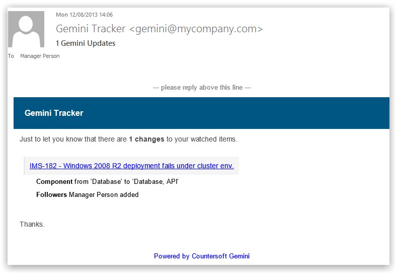
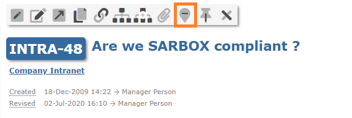
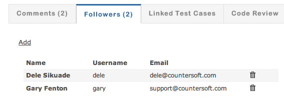
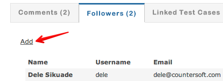
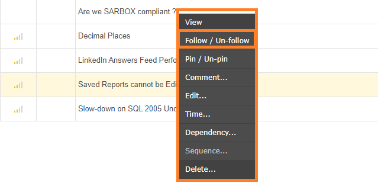

You can choose to receive email notifications whenever an item you are following changes.

Users can follow/unfollow individual items and receive an email alerts whenever the item is changed.

Those with relevant permissions can also view and maintain the item's followers.

You can add other users to the followers list - start typing a name to find matching users:

You can also choose to follow or un-follow an item from the grid using the right-click context menu.
